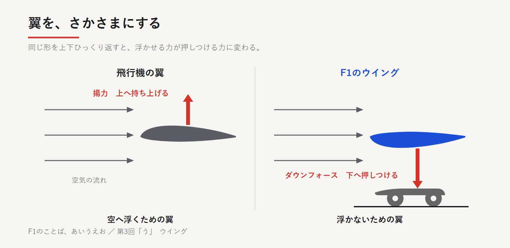
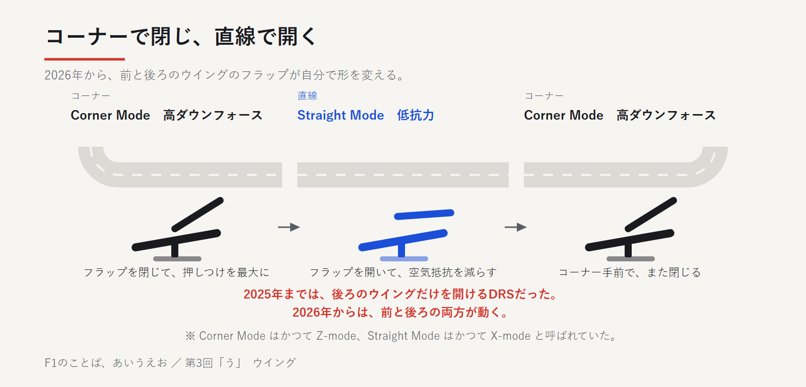

飛行機の翼を、さかさまにする
飛行機の翼は上側がふくらんだ形で、空気が流れると上向きの力（揚力）が生まれます。
F1のウイングは、この翼を上下さかさまに取り付けたものです。
形がさかさまなら、車を路面へ押しつける力が生まれます。これがダウンフォースです。
前後に1枚ずつあります（フロントウイング、リアウイング）。飛ぶための翼ではなく、飛ばないための翼です。


なぜ、押しつけるのか
押しつける力が強いほど、タイヤは路面をよくつかみます。
第1回で、アンダーステアとは前のタイヤのグリップが足りず曲がらない状態だと書きました。押しつける力が足りないと、まさにこれが起きます。
ただし、タダではありません。空気を下へ押す代わりに、車は後ろへ引き戻されます。これが空気抵抗、ドラッグです。
立てるか、寝かせるか
ウイングは角度を変えられます。板を立てるか、寝かせるか。
立てれば押しつけが強くなりコーナーは速くなりますが、空気抵抗が増え直線は遅くなります。寝かせればその逆で、直線は速くてもコーナーで曲がりきれません。
どちらを取るかはサーキット次第。全部は手に入りません。
レースの最中でも、ピットで調整できます。第1回で「フロントウイングの角度を立てる」と書いたのがこれです。
2026年、ウイングが動きはじめた
2026年、ウイングは走りながら自分で形を変えるようになりました。
2025年まではDRS（ドラッグ・リダクション・システム）。前との差が1秒以内のとき、指定区間でリアウイングを開けました。2011年から使われ、2025年のアブダビが最後でした。
2026年からは廃止され、代わりに「アクティブエアロ」に。前後とも、フラップ（可動する板）が動きます。
コーナー用は「コーナーモード」で板を閉じ、押しつけを最大に。直線用は「ストレートモード」で板を開き、抵抗を減らします。かつてはZ-mode、X-modeと呼ばれていました。


開くのはドライバーがボタンを押したときだけ。アクセルを戻すかブレーキを踏めば自動で閉じます。区間はFIAが決めますが、DRSと違い「1秒以内」の条件はなく、全車が毎周使えます。
つまり前節の「立てるか、寝かせるか」を走りながら切り替えているのです。どちらか選ぶしかなかったものを、両方取りにいっています。
追い抜きの支援はDRSから「オーバーテイクモード」に。前との差が1秒以内なら、追加の電気エネルギーを使えます。
車全体としては、2026年の車は空気抵抗を約55％、ダウンフォースを約30％減らす狙いの設計です。
中継での見つけ方
DRSは開く瞬間がはっきり見えました。ストレートモードは1周に何度も切り替わり、肉眼では気づきにくいのが実情です。だからこそ、狙って見る価値があります。
手がかりは、区間の入口に立つ看板と、中継のトラックマップに表示される区間です。
ピットで、フロントウイングの端に工具を差し込んでひねる場面。あれが角度の調整です。
気づけたときの手応えは、DRSより大きいはずです。